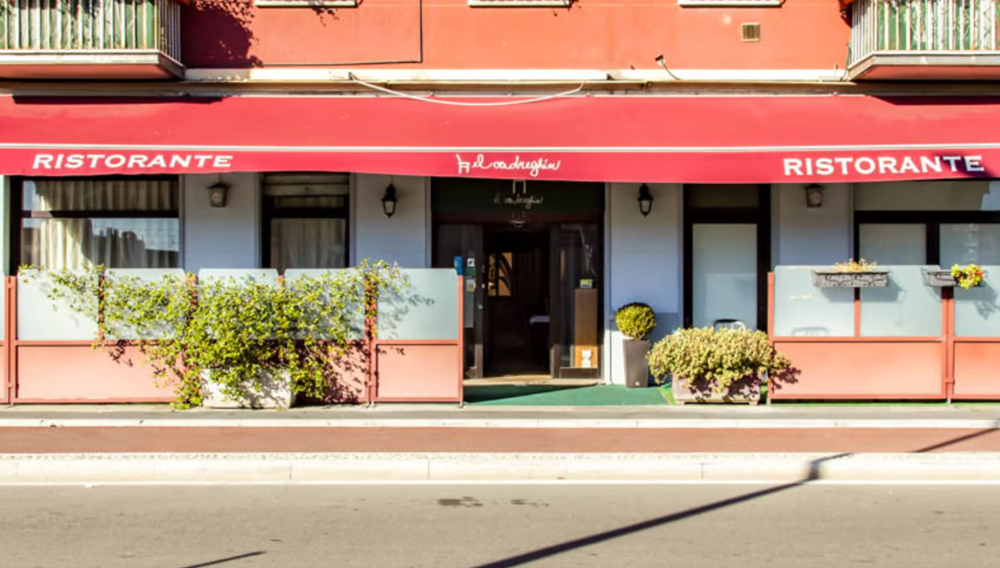
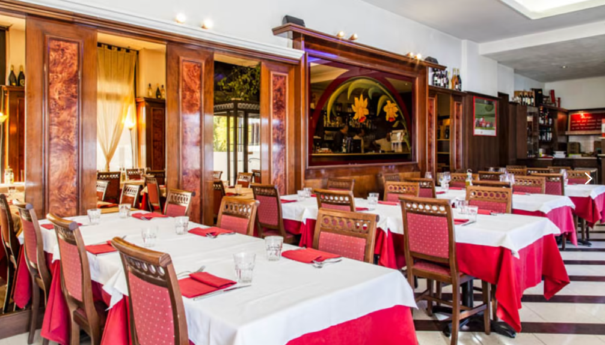

Pesce fresco ogni giorno, nella Milano nord. Via del Ricordo 30.
Nella zona nord di Milano, El Cadreghin è da decenni un punto di riferimento per chi ama il pesce fresco e la cucina di mare autentica. Il nome, in dialetto milanese, significa "la sedia" — come quelle appese alle pareti che da sempre decorano la sala, simbolo di un'accoglienza genuina.
Massimo accoglie ogni ospite con la cura e la semplicità di un tempo, in un'atmosfera calda, tranquilla e familiare. Ogni piatto è preparato con materie prime fresche, scelte ogni giorno con cura, per portare al tuo tavolo il sapore vero del mare.

Selezioniamo solo il meglio dai mercati ittici locali
Ricette genuine, ingredienti autentici, sapori veri
Dal 1985, Massimo ti accoglie come a casa
È sempre un piacere tornare al Cadreghin. Il menù è ampio, i piatti sempre saporiti. Massimo sempre gentile e pronto a consigliare.
— Maria Anna T. ★★★★★Piatti di pesce ottimi e servizio impeccabile. La tranquillità che ti trasmette il proprietario è davvero impagabile!
— Luisa P. ★★★★★Ottimo ristorante e ottima accoglienza. Piatti davvero buoni, curati con pesce fresco e saporito. Da tornarci ad occhi chiusi.
— Cliente verificato TheFork ★★★★★